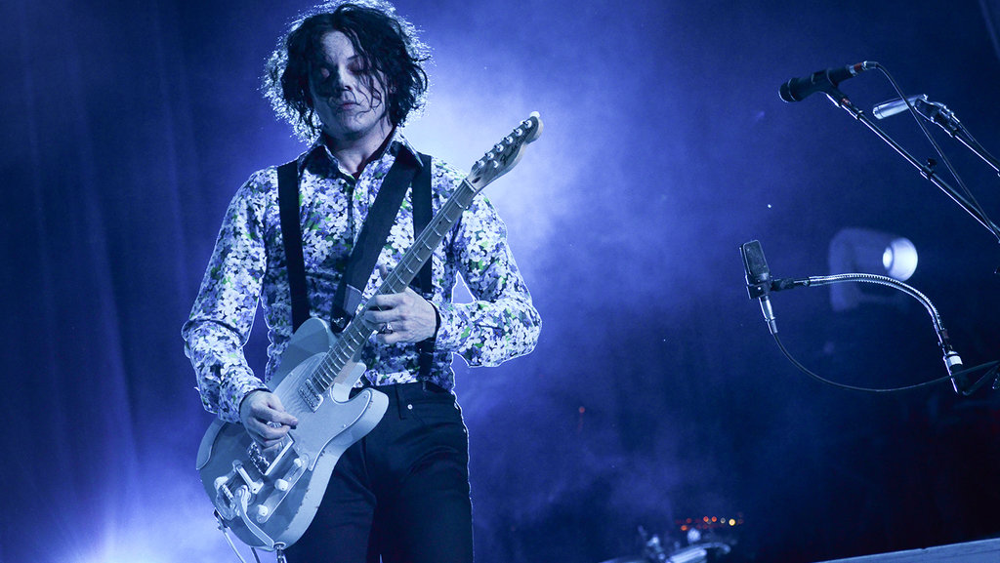

2018 Festivals
Jack Announces Additional Festival Headline Performances
Jack has revealed five additional European festival performances
in Belgium, Spain, Portugal, and Finland.
July 7: Rock Werchter – Werchter, Belgium
July 12 – 14: Mad Cool Festival – Madrid, Spain
July 14: Nos Alive – Lisbon, Portugal
July 13 – 15: Ilosaarirock Festival – Joensuu, Finland

What?
Jack White confirmed the impending release of his new album,
Boarding House Reach. Now, he’s revealed the album’s release date
— March 23rd.
When?
Jack has announced his first tour in almost four years.
The new live dates in support of his third solo album
Boarding House Reach kick off on April 19 in Detroit.
Where?
At Little Caesars Arena and continue through August 23 in Las Vegas,
with stops in London, Paris and Amsterdam.